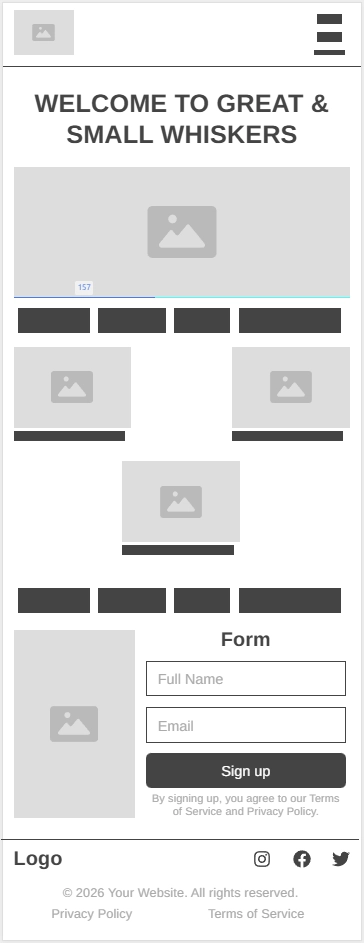
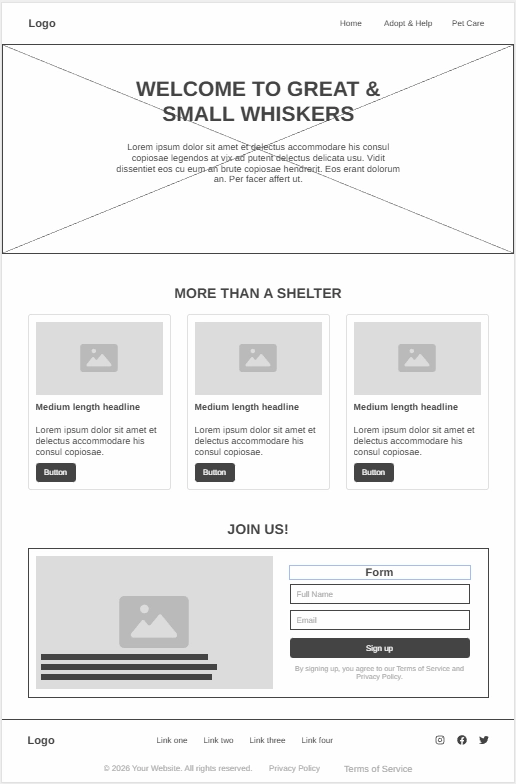

Great & Small Whiskers Pet Shelter
This name represents a distinctive attribute of pets: "Whiskers", to note that this pet shelter is for every type of animal, big or small. The shelter was created to take care of animals and help people be more conscious about them, so the webpage should reflect this purpose.
Domain availability: greatsmallwhiskers.org
Site Purpose
The site provides information about the shelter and its services, ways to help or volunteer and tips to take care of pets.
Scenarios
Where can I adopt a pet?
Are there any pet shelter near my house?
How can I take better care of my pets?
Color Schema
Main Color:
Accent Color:
Background Color:
Headings Color:
Paragraphs Color:
Fonts:
Heading Font:
Body Font:
Wireframe:
Mobile view:

Desktop view:
